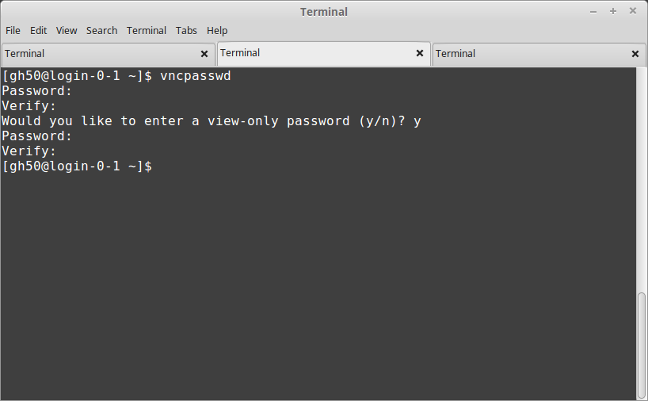
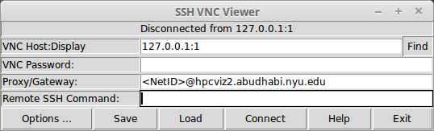
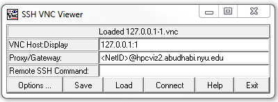

Visualization Nodes¶
Introduction to the Visualization Nodes¶
The Visualization Nodes is a High Performance Computing resource that provides an advanced visualization capability to the end user’s desktop. Users can connect to the nodes and take advantage of its advanced capabilities to render very large data sets interactively from their desktops without having any special graphics hardware on their workstation. The images are sent back to the user’s desktop over the network and displayed on the desktop using a lightweight visualization client.
The Visualization nodes consists of 4 render nodes. Multiple users can share a node. Each node has access to the same /home and /archive shared file system on the Dalma HPC nodes.
To run any visualization software interactively on the nodes you will first need to connect to the login node and request resources. In simple terms, the login node will check which nodes in the nodes are available for you and will consequently allocate you the requested resources. You can then connect to your given visualization node and start your visualization session there.
Remote visualization method on the visualization nodes is implemented using Virtual Network Computing (VNC). VNC is a desktop sharing system which uses a protocol to remotely control another computer (one of the visualization nodes nodes for example). It transmits the keyboard presses and mouse clicks from one computer to another relaying the screen updates back in the other direction, over a network.
Visualization nodes hardware and software¶
The visualization nodes have an Intel x86-64 architecture with CentOS 7.2 operating system. Each visualization render node has:
32 cores Intel Xeon 6130 2.1GHz CPU
128GB of RAM
2 Nvidia Quadro P4000 GPU
Software on the visualization nodes can be accessed through the environment module system (module commands). Currently installed software includes Paraview, IDL, PyMOL, VMD, and Matlab.
Remote visualization session through VNC¶
A remote visualization session consists of connecting a Virtual Network Computing (VNC) client to a VNC server on a different computer over the network.
To connect to the nodes via a remote visualization session, you will first need to download a VNC client software on your local machine. The standard VNC client software which has been tested for connecting to the visualization nodes is SSVNC (http://www.karlrunge.com/x11vnc/ssvnc.html).
Before you can request a remote visualization session on the login node, and then start a session on your allocated node on the nodes, you will have to first create a VNC password.
Starting a remote visualization session¶
A quick guide to start a VNC session on the visualization nodes is given in the following steps:
(Necessary only once) create a VNC password;
SSH to the login node and request resources via the command
viz-tvnc(orviz-tvnc -X);Start a VNC client on your local machine and connect to your allocated node;
Start a 3D application inside your VNC session.
More detail descriptions of the steps above are given in the subsections below.
Creating a VNC password (necessary only once)¶
If this is your first time using a remote VNC session on the visualization nodes, you need to create a VNC password. While logged in to the login node type
vncpasswd
in the terminal window and follow the instructions.
Note that you do not need to enter a view-only password. This is an extra option that allows collaborators to connect to and view your session without being able to interfere.
This above step can be repeated whenever your VNC password needs to be changed.
Requesting resources¶
While logged in to the login node, you can request an allocation of a visualization node by typing
viz-tvnc
in the terminal window. If you need to use GPU-enabled application, run viz-tvnc -X.
viz-tvnc -X11
This will allocate a single visualization node for your exclusive use for a limited time period (presently 6 hours max usage). The node allocated below, for example, is hpcviz2.abudhabi.nyu.edu.
You can specify the geometry (size) of the remote visualization session when starting viz-tvnc with the -g option:
-g DESKTOP_RESOLUTION
The resolution to run the desktop at. This can be any “<width>x<height>” value, and doesn’t need to match any display device resolution.
Installing a VNC client¶
We kindly ask users to use ssvnc, available on Linux, MacOS and Windows.You could install it from zip or tar.gz, or from package manager if you are using Ubuntu / Debian.
Installing from zip
For MacOS
First you need to install X11 support here: https://www.xquartz.org/.
This approach is valid for Windows, MacOS and Linux / Unix.
Download this file: ssvnc-1.0.30.zip. For all versions, http://www.karlrunge.com/x11vnc/ssvnc.html#download.
Install it by following the instructions here: http://www.karlrunge.com/x11vnc/ssvnc.html#quickstart
Installing from package manager Alternatively, for Debian / Ubuntu, you could install it by
apt-get install ssvnc
Starting a VNC client¶
To make a secured VNC client-server connection, please follow the instructions below.
If ssvnc is installed from zip After you extracted the zip file ssvnc-1.0.30.zip, the content looks like
For Linux / Unix, the executable you want to execute is
Unix/sshvnc
For Mac, the executable you want to execute is
MacOSX/sshvnc
For Windows, the executable you want to execute is
Windows/sshvnc.bat
If ssvnc is installed from package manager In a new terminal, you can start the viewer as follow:
sshvnc
Connecting a VNC client
Once the client is started, you need to instruct it to connect to the visualization server. Here is the example screen shot for connecting to your session. Change <DisplayNumber>, <NetID>@<Visualization host assigned to you> in the example to your actual Display Number, NetID and the host assigned to you.
VNC Host:Display
127.0.0.1:<DisplayNumber>
Proxy/Gateway
<NetID>@<Visualization host assigned to you>
Linux / MacOS Screenshot (Display: 1, Host: hpcviz2.abudhabi.nyu.edu)
Windows Screenshot (Display: 1, Host: hpcviz2.abudhabi.nyu.edu)
Cursor
By default the cursor is a single pixel dot, and difficult to see. To change it in Linux, enable the following option in SSH VNC Viewer.
Options -> Advanced ... -> Unix ssvncviewer ... -> Use X11 Cursor
To change it in Windows, please follow the instructions below first.
Click Connect. A new window will pop up.
The first time you attempt to connect to the visualization node, you will probably see a warning that looks like this.
The authenticity of host 'HPCVIZ1.ABUDHABI.NYU.EDU (10.230.42.111)' can't be established.
ECDSA key fingerprint is
74:55:46:1a:ab:37:30:8e:86:54:97:38:bb:3c:fa:f0.
Are you sure you want to continue connecting (yes/no)?
Type yes to continue.
Then it might ask you for 2 passwords:
(Not applied if you have your ssh key stored on Dalma). Your ssh password. This is essentially your login password to Dalma.
Your VNC password. Set up earlier in this tutorial.
For Certain MacOS Users
Some MacOS is not compatible with the ssvnc client. In that case, please follow these steps to connect.
- On your computer, open a terminal. In that terminal, run the following command to establish an SSH tunnel to the visualization node.
ssh -L 5930:127.0.0.1:590<DisplayNumber> <NetID>@<Visualization host assigned to you>``
For example, if my NetID is
wz22, my visualization host ishpcviz2.abudhabi.nyu.eduand display number is2,ssh -L 5930:127.0.0.1:5902 gh50@hpcviz2.abudhabi.nyu.eduThen keep this terminal active.
- Open Safari. Enter this in the address.
vnc://127.0.0.1:5930Click
Allowto open “Screen Sharing”. Then clickConnect. It will prompt for VNC password.
Finally, the remote desktop will show up.

Cursor
By default the cursor is a single pixel dot, and difficult to see. To change it in Windows, click the left-upper most icon of the window, “connection options…”. Then change the “Local cursor shape” to “Normal arrow” .. image:: ../img/modified-sshvnc-cursor-windows.png
Running applications inside the VNC session¶
To run GPU enabled applications on the GPU device, you will need to append “vglrun” command when starting your application in the terminal on the remote desktop. E.g.,
vglrun application
For example as a simple test you can try:
vglrun glxspheres64
Matlab Users
Either you directly invoke matlab
matlab
Or disable software opengl by
vglrun matlab -nosoftwareopengl
Stopping a remote visualization session If you just close your local VNC viewer window, your session will still be running on the visualization nodes and you could reconnect to it from a different computer for example.
To really terminate a VNC session on the visualization nodes, you should do one of the following actions:
Log outfrom inside your VNC session, this will stop your session and allocation.- If you are unable to do so, you can “force quit” your allocation by using the
scancelcommand on the login node First, log in to the login node
Then to check your session ID use
squeue -u <NetID>Use
scancel <Session-ID>to cancel the session.
- If you are unable to do so, you can “force quit” your allocation by using the